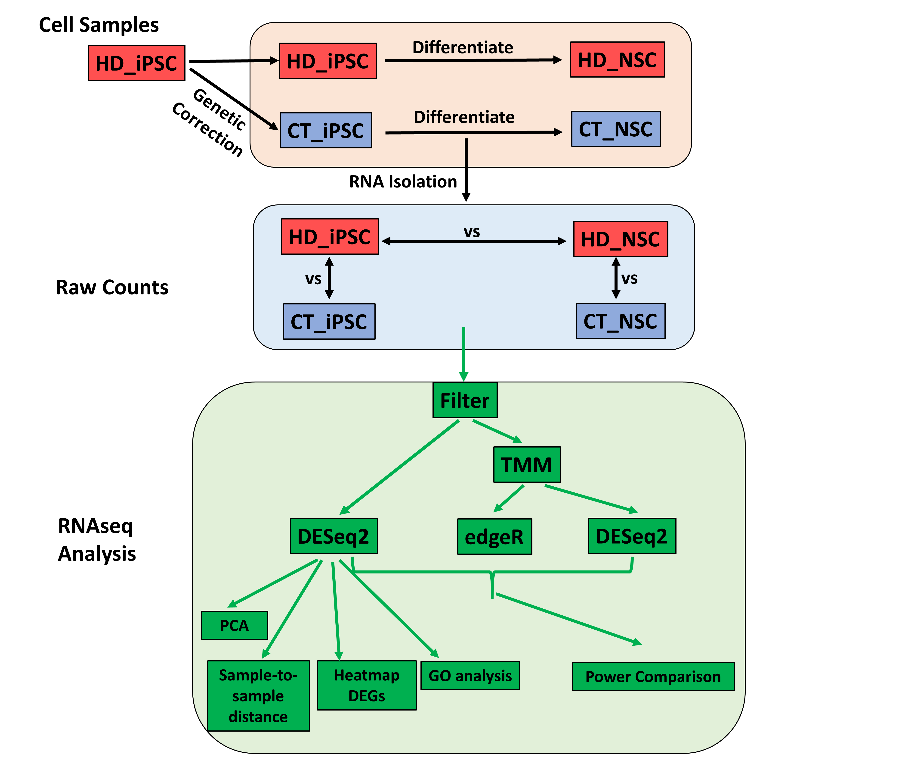
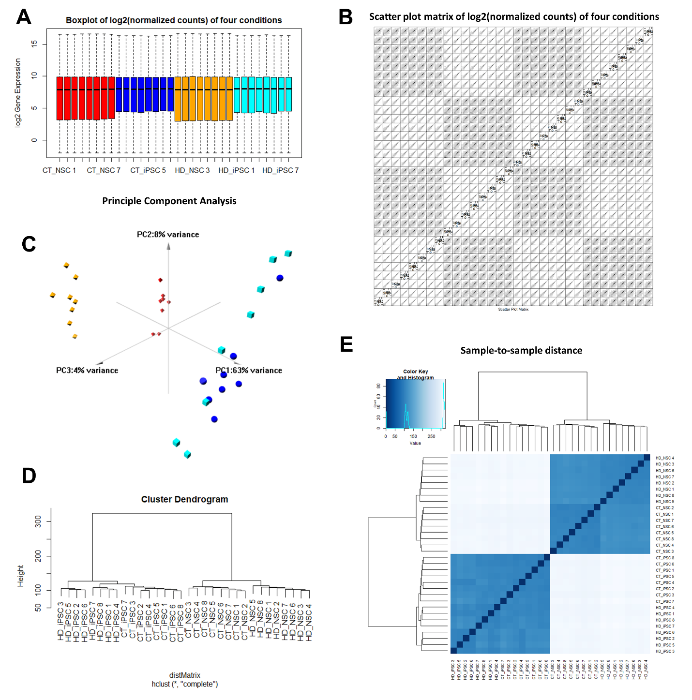
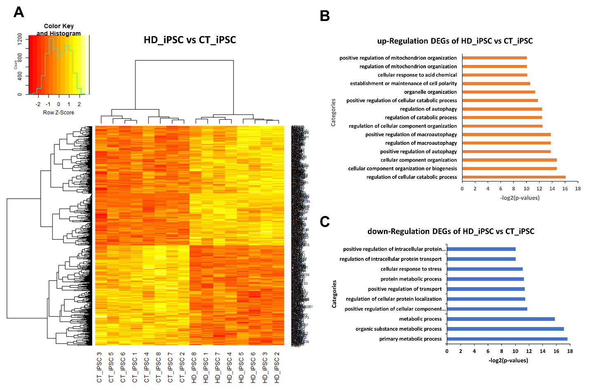
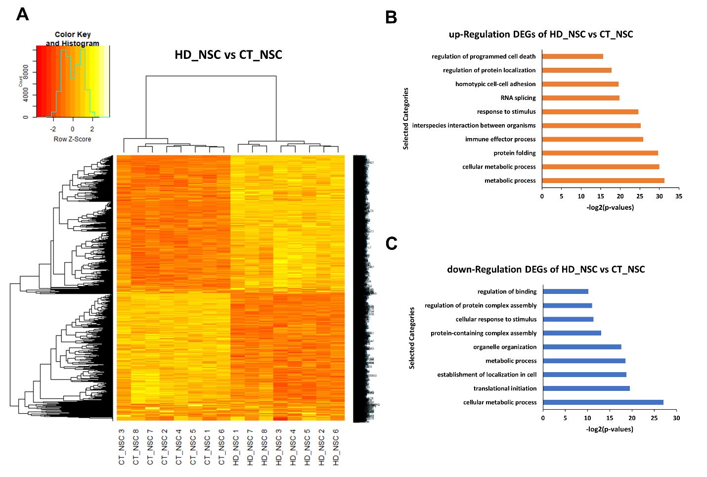
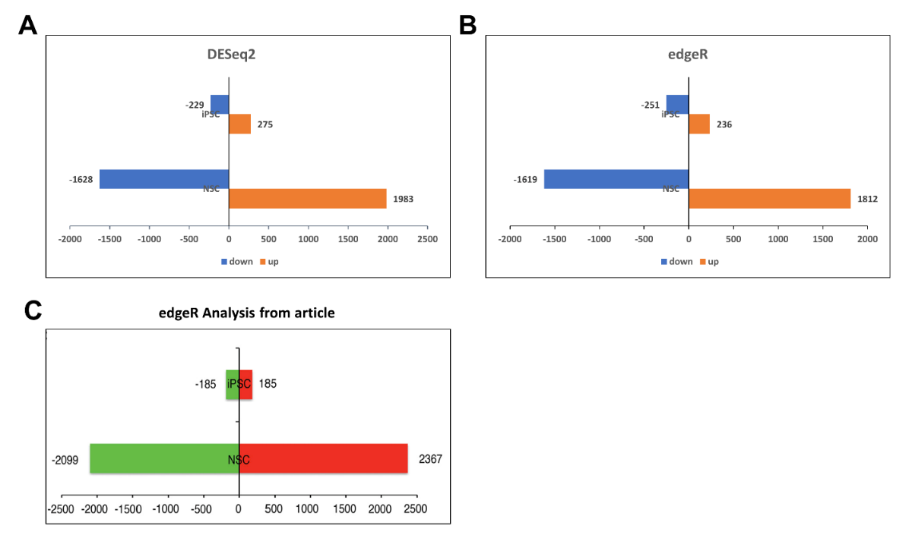
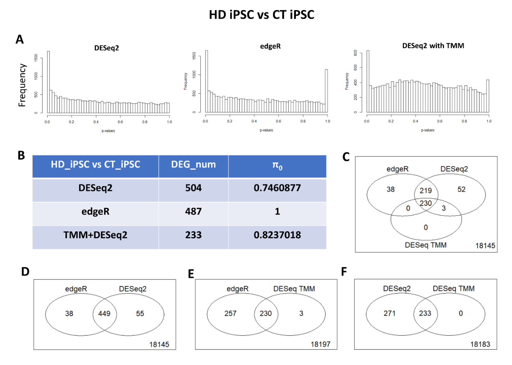
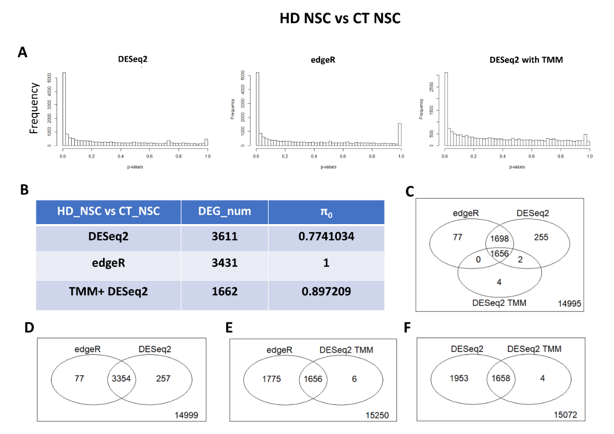
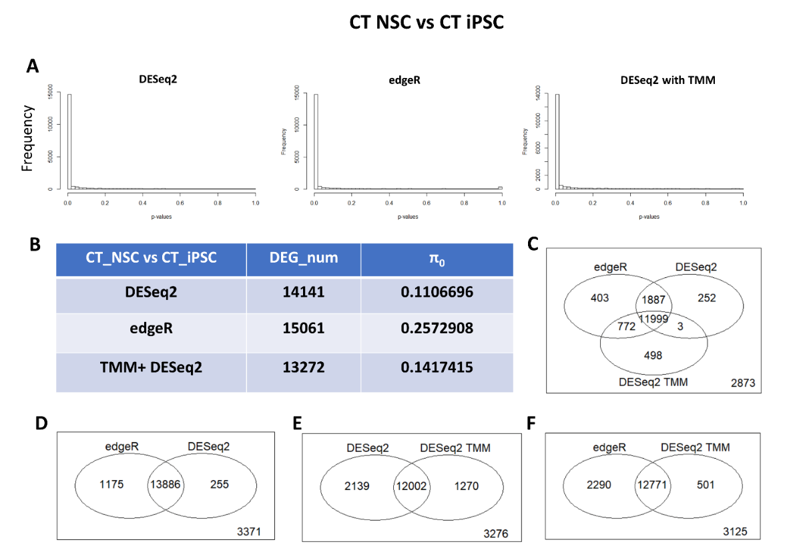
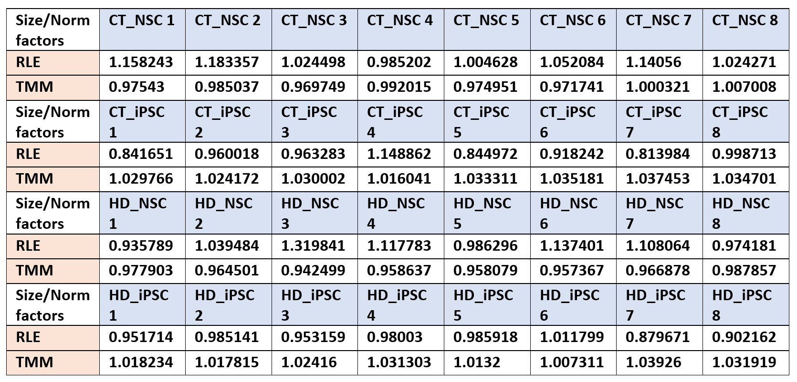

Last updated: 2019-06-06
Checks: 2 0
Knit directory: STAT555-RNAseq/
This reproducible R Markdown analysis was created with workflowr (version 1.3.0). The Checks tab describes the reproducibility checks that were applied when the results were created. The Past versions tab lists the development history.
Great! Since the R Markdown file has been committed to the Git repository, you know the exact version of the code that produced these results.
Great! You are using Git for version control. Tracking code development and connecting the code version to the results is critical for reproducibility. The version displayed above was the version of the Git repository at the time these results were generated.
Note that you need to be careful to ensure that all relevant files for the analysis have been committed to Git prior to generating the results (you can use wflow_publish or wflow_git_commit). workflowr only checks the R Markdown file, but you know if there are other scripts or data files that it depends on. Below is the status of the Git repository when the results were generated:
Untracked files:
Untracked: DESeq2 size factors.csv
Untracked: TMM normalization factors.csv
Untracked: analysis/GSE74201_rawReadCounts.csv
Untracked: downRegulated Genes CTvsHDiPSC.txt
Untracked: downRegulated Genes in NSC.txt
Untracked: pca3d.tiff
Untracked: summary of pca.csv
Untracked: upRegulated Genes CTvsHDiPSC.txt
Untracked: upRegulated Genes in NSC.txt
Note that any generated files, e.g. HTML, png, CSS, etc., are not included in this status report because it is ok for generated content to have uncommitted changes.
These are the previous versions of the R Markdown and HTML files. If you’ve configured a remote Git repository (see ?wflow_git_remote), click on the hyperlinks in the table below to view them.
| File | Version | Author | Date | Message |
|---|---|---|---|---|
| Rmd | 0bc8b06 | jiuchao | 2019-06-06 | wflow_publish(“analysis/results.Rmd”) |
| html | c91c280 | jiuchao | 2019-06-06 | Build site. |
| html | cfa5d92 | jiuchao | 2019-06-06 | Build site. |
| Rmd | 596bf9d | jiuchao | 2019-06-06 | add work report |
Huntington’s Disease (HD) is a genetically inherited disease caused by expansion of CAG (cytosine-adenine-guanine) triplet repeats in the coding region of huntingtin protein (HTT). Such abnormal HTT protein will cause neuronal loss in human brain regions like cortex and striatum (Aronin et al., 1995), which further leads to movement disorders, psychological changes, and cognitive decline (Victorson et al., 2014).
Previous work identified induced pluripotent stem cells (iPSCs) from HD patients and the differentiated neural stem cells (NSCs) as good HD models for mechanistic studies and drug screening (Zhang et al., 2010). iPSCs are pluripotent stem cells that can be reprogrammed from somatic cells, and have the ability to differentiate to any types of somatic cells. NSCs are multipotent stem cells differentiated from pluripotent stem cells, generating mainly neurons and glial cells in the nervous system. Genetic defects of HD-patient-derived iPSCs was successfully corrected previously (An et al., 2012). What is more, characterization of the genetic corrected iPSCs and NSCs showed normalization of cellular phenotypes (An et al., 2012). Therefore, such genetic corrected iPSCs and NSCs serve well as isogenic controls in mechanism study.
Microarray-based gene expression analysis comparing iPSCs from HD and corrected lines previously revealed some useful insights in terms of establishing HD cell models, but also showed that global gene expression remained essentially unchanged at iPSC stage. In contrast, disease phenotypes were manifest in NSC stage concerning cell death, mitochondria dysfunction and susceptibility to growth factor withdrawal (An et al., 2012). However, the characterization with NSCs was only measured by immunohistochemistry and RT-PCR analysis, but not with microarray. To better understand gene expression change caused by HTT protein dysfunction in HD model, large-scale analysis should be performed with not only iPSCs but also NSCs.
In this work, the author utilized HD-patient-derived iPSCs and NSCs as HD models and genetic corrected iPSCs and NSCs as isogenic controls. Transcriptome change measured by RNAseq was performed with both iPSCs and NSCs from HD and control cell lines. This work revealed large-scale gene expression changes caused by HTT protein dysfunction and the gene ontology categories the differentially expressed genes (DEGs) belong to (Ring et al., 2015).
In my project, I used raw read counts obtained by RNAseq from Ring’s work (Ring et al., 2015), which is available in Gene Expression Omnibus (GEO: GSE74201). The data consisted of four conditions: CT iPSC, CT NSC, HD iPSC and HD NSC, with 8 replicates in each condition.
In the original paper, the author did two comparisons: HD versus CT iPSCs and HD versus CT NSCs. Differential expression analysis and weighted co-expression analyses were performed with edgeR and weighted gene coexpression network analysis (WGCNA) packages. After determining clusters of co-regulated genes, the author assessed the gene ontology (GO) annotation of each clusters with DAVID (full names: Database for Annotation, Visualization and Integrated Discovery).
In order to understand gene expression change related to HD, I did the same comparisons: HD versus CT iPSCs and HD versus CT NSCs. The difference was that I used DESeq2 package (Love et al., 2014) to analyze differential expression, and performed GO analysis with Gene Ontology enRIchment anaLysis and visuaLizAtion tool (GOrilla) (Eden et al., 2009).
To assess the power difference among the various differential expression analysis packages, I also compared the power of DESeq2 with built-in RLE normalization, edgeR (Robinson et al., 2010) and DESeq2 with TMM normalization. Other than the two pairwise comparisons I did for studying gene expression changes related to HD, I added one more comparison CT NSC versus CT iPSC for the purpose of power assessment.
Figure 1 showed the pipeline of my data analysis procedure. In order to clearly show the 4 conditions I was working with, I included the sample preparation part shown by orange. Blue and green boxes showed what I have done after getting the raw read counts.

Figure 1. Pipeline for differential expression analysis using DESeq2, and power comparison of DESeq2 with built-in RLE normalization, edgeR and DESeq2 with TMM normalization.
I first checked data quality of the raw read counts data from 32 samples by visualizing them through histograms, scatter plot matrix, boxplot and hierarchical clustering (data in Rmd and html files). Then I filtered out genes with total read counts in all the 32 samples fewer than 10.
Normalization of all the 32 samples from 4 conditions was performed with DESeq2 built-in RLE function. Normalized count data were obtained from the result using counts function in DESeq2 package.
Boxplot and scatter plot matrix of log2 transformed normalized counts were plotted for data visualization. Principle component analysis (PCA) was done using prcomp function (Le et al., 2008) with normalized counts. Pca3d package was used to demonstrate pca result in 3-dimensional scale. In drawing the hierarchical clustering dendrogram of all samples, I used complete linkage with Euclidean distance. Samples-to-sample distance was drawn with heatmap.2 function.
I first constructed DESeqDataSet by inputing filtered read counts, gene names and condition information from all the 32 samples. Size factors and dispersion will be automatically calculated by calling DESeq function. Results with p-values, adjusted p-values and log2FoldChange information could be extracted with res function. Similarly, normalized counts and rlog transformed data could be acquired with counts and rolg functions respectively. Genes with adjust p-values < 0.01 were considered to be differentially expressed. DEGs were then separated as up-regulated and down-regulated groups for GO analysis. Rolg transformed data for DEGs were used for heatmap depiction with heatmap.2 function. Notably, DESeq2 will produce some “NA” in p-values with genes of low mean normalized counts. We need to either remove them or replace them with other values.
Firstly, TMM normalization needs to be done before differential expression analysis. To do TMM normalization, I created a DEGList with filtered read counts, gene names and condition information, then calculated normalization factors and estimated dispersion by running calcNormFactors and estimatedDisp functions respectively. After normalization and dispersion estimation, I performed exactTest to do differential expression analysis. Qvalue function (Storey and Tibshirani, 2003) was used to get q-values and calculate ??0. q-values < 0.01 were used as the threshold for differential expression.
Different from directly running DESeq, which estimates size factors and dispersion automatically, I first assigned the normalization factors calculated from TMM method to DESeqDataSet as its size factors. DESeq function would then run with such pre-existing size factors. After that, the same methods and standards with regular DESeq2 analysis were used to extract results and calculate DEGs.
GO enrichment analysis was performed using an online platform called GOrilla. Entire set of up-regulated or down-regulated gene names were used as input to get corresponding GO categories.
Two parameters were used to do power comparison: ??0 calculated using qvalue function and DEGs identified by DESeq2 with built-in RLE normalization, edgeR and DESeq2 with TMM normalization. Venn diagram was used to show relationships of DEGs identified by the three methods. Notably, if we remove “NA”, DESeq2 result will be shorter than edgeR, which will make vennCounts generate inaccurate DEG numbers. I then solved it by replacing “NA” with 1, which does not affect calculating DEG numbers. However, we need to keep in mind that such replacement can only be done after qvalue adjustment and ??0 estimation.
Before data analyzation, I first assessed data quality of raw counts from the 32 samples in 4 conditions. Boxplot showed minor inconsistency in median from the first 3 groups: CT NSC, CT iPSC and HD iPSC. What is more, one group (HD_NSC 1) had extremely low bound in boxplot compared to the others (data available in Rmd and html files).
Therefore, I first discarded genes with total read counts fewer than 10 in all samples. 3819 low-expressed genes were filtered out from the 22506 genes in this step. With big read counts, I further normalized all the samples by running DESeq, and acquired the normalized read counts. Boxplot indicated comparable median values among all the 32 samples after normalization, except that both of the two iPSC conditions had more low read counts compared to the two NSC conditions (Figure 2A). Scatter plot matrix showed that samples in the same condition correlated with each other well, but not with samples from other conditions (Figure 2B). A detailed distance information could be seen from the hierarchical clustering dendrogram (Figure 2D) and sample-to-sample distance heatmap (Figure 2E). Basically, all iPSC samples were far from all NSC samples, which is reasonable because of the big gene expression changes during differentiation from pluripotent stem cells to neural stem cells. However, among all the iPSC samples, HD groups was not separated well from CT groups. In contrast, among NSC samples, all of those from HD clustered together, while all the others from CT clustered together. This meant HD and CT groups differed more in NSC stage than iPSC stage. The big difference between iPSCs and NSCs, slight difference of NSCs between HD and CT, and similarity of iPSCs between HD and CT groups were even more apparent shown in the principle component analysis by 3-dimensional demonstration (Figure 2C). This discovery from large-scale transcriptome analysis was consistent with previous work showing some phenotypes were more apparent in NSC rather than iPSC stage (An et al., 2012).
 Figure 2. Quality assessment of data after DESeq2 normalization.
Though HD phenotypes were not obviously apparent in iPSC stage, I did the analysis of differential gene expression to check early-stage changes. Comparison of HD iPSCs to CT iPSCs with DESeq2 identified 504 DEGs (false discovery rate threshold: 1%), among which 275 were up-regulated and 229 were down-regulated. Figure 3A showed the heatmap of all differentially expressed genes. What is more, GO analysis revealed genes up-regulated mainly fell into cellular catabolic process, positive regulation of autophagy, cellular organization and mitochondria organization categories (Figure 3B). Genes with expression decreased were found to be mainly involved in metabolic process, protein localization and transportation (Figure 3C). These results indicated that genes related to HD phenotypes, like regulation of autophagy, started to be differentially expressed from iPSC stage.

Figure 3. Differential expression analysis of HD_iPSC vs CT_iPSC and GO analysis. A. Heatmap demonstration of DEGs after DESeq2 analysis. B. All categories of up-regulated genes in HD_iPSC compared to CT_iPSC identified by GO analysis. C. All categories of down-regulated genes in HD_iPSC compared to CT_iPSC identified by GP analysis.
As we learned from hierarchical clustering and principle component analysis, HD and CT groups differed more in NSC than iPSC stage. This was further confirmed by differential expression analysis of HD versus CT NSCs. 3611 genes were found to be differentially expressed in NSC stage. This number dramatically increased compared with iPSC stage. Among them,1983 were up-regulated and 1628 were down-regulated. Heatmap were generated from all differentially expressed genes (Figure 4A). Moreover, GO enrichment analysis using Gorilla identified 281 up-regulated categories and 67 down-regulated categories, which were also much more than iPSC stage. I selected some categories for demonstration based on p-values (Figure 4B and 4C). There were actually overlapped categories in both up-regulated and down-regulated genes, like metabolic process and response to stimuli, indicating that such categories were affected significantly in multiple directions. Other than that, protein folding, assembly and binding were also affected greatly. It was worth to mention that immune response and regulation of programmed cell death were exclusively detected in up-regulated DEGs. This indicated that HD phenotypes like cell death and the following immune responses were present in NSCs.

Figure 4. Differential expression analysis of HD_NSC vs CT_NSC and GO analysis.
In summary, gene expressions differed more in NSC stage in comparison with iPSC stage. I detected 504 and 3611 DEGs in iPSC and NSC comparisons using DESeq2 (Figure 5A). This was very different from the original paper, which identified 370 and 4466 respectively with edgeR (Figure 5C). Interestingly, even when I changed to edgeR to do differential expression analysis, I identified similar numbers of DEGs with DESeq2 analysis, 487 in iPSC stage and 3431 in NSC stage (Figure 5B), Basically, comparing with original paper, my project detected more DEGs when the difference was relatively small, and fewer DEGs when the difference was relatively big.

Figure 5. Comparison of DEG numbers with original article.
Normalization is an essential step for RNAseq data before differential expression analysis. DESeq2 and edgeR are two of the widely used tools for gene differential expression analysis, and each of them has normalization methods in their packages. In DESeq2, RLE is a built-in function in DESeq. When the DESeqDataSet does not have size factors, running DESeq function will first estimate size factors, while If the DESeqDataSet has size factors beforehand, DESeq function will run with pre-existing size factors. TMM is a separated normalization method in edgeR package, which will estimate normalization factors for later analysis.
In this part, I compared the differential expression analysis results from DESeq2, edgeR, and DESeq2 using normalization factors from TMM. To get a relatively solid conclusion, other than HD versus CT iPSCs, HD versus CT NSCs, I also included CT iPSC versus CT NSC comparison. In this way, I had three pairwise comparisons to assess the difference among all the three methods.

Figure 6. Using HD_iPSC vs CT_iPSC data set to do power comparison of DESeq2 with built-in RLE normalization, edgeR and DESeq2 with TMM normalization.
I firstly plotted p-value distributions obtained from the three methods (Figure 6-8 A). DESeq2 and edgeR had similar height of peak close to 0, while DESeq2 using TMM normalization had relatively lower height. ??0 estimated by qvalue function showed similar result about DESeq2 from the three data sets: ??0 is always smaller using built-in normalization than TMM normalization (Figure 6-8 B). Notably, edgeR always had the biggest ??0 despite of the high peak close to 0 in p-value distribution. This was probably due to the small peak close to 1 (middle panels of Figure 6-8 A), which affected the accuracy of ??0 estimation. This happened because my data filtration was performed based on the sum counts of all the 4 conditions. Comparison, however, was done in pairwise manner, so small counts might still be present in the selected two conditions.
Analyzing numbers and relationships of DEGs generated from the three methods provided more information in assessing their powers. In HD versus CT iPSC comparison, DESeq2 and edgeR detected similar amounts of DEGs (DESeq2: 504, edgeR: 487), and most of them (449) overlap with each other (Figure 6B and 6D). However, DESeq2 analysis using normalization factors from TMM identified only 233 DEGS (Figure 6B). Surprisingly, all the 233 genes were covered by regular DESeq2, and 230 were covered by edgeR (Figure 6E-F).
Similarly, results from HD versus CT NSC comparison showed that DESeq2 identified 3611 DEGs, while edgeR identified a little fewer but comparable 3431 DEGs (Figure 7B). 3354 genes detected by the two methods were found to be overlapped (Figure 7D). However, DESeq2 using TMM normalization only detected 1662 DEGs (Figure 7B), among which 1656 was covered by edgeR, and 1658 was convered by regular DESeq2 (Figure 7E-F).

Figure 7. Using HD_NSC vs CT_NSC data set to do power comparison of DESeq2 with built-in RLE normalization, edgeR and DESeq2 with TMM normalization.
Result generated from CT NSC versus iPSC was also consistent with discoveries above. There were much more DEGs in this process because of the huge gene expression change during differentiation. EdgeR detected relatively more DEGs (15061) than DESeq2 (14141) (Figure 8B). 13886 were found to be overlapped in the two groups (Figure 8D). DESeq2 with TMM normalization, in this comparison, did not reduce the number of DEGs as much as in the first two comparisons, but still generated fewer DEGs (13272), with 12002 covered by DESeq2 and 12771 covered by edgeR (Figure 8B, 8E-F).

Figure 8. Using CT_NSC vs CT_iPSC data set to do power comparison of DESeq2 with built-in RLE normalization, edgeR and DESeq2 with TMM normalization.
Based on the three pairs of datasets, we could see DESeq2 and edgeR using normalization method from their own packages generated similar number of DEGs, and around 90% overlapped with each other. However, when utilizing normalization factors from edgeR package, DESeq2 analysis identified much fewer DEGs. With the first two datasets, this number was even reduced to as low as half in comparison with the other two methods. The consistent discoveries meant that DESeq2 and edgeR had similar power concerning differential expression analysis, while using normalization factors generated from TMM in edgeR package to DESeq2 would reduce its power. This conclusion needs further substantiation with simulated data and biological samples with known characteristics.
Based on gene differential expression analysis of HD versus CT in both iPSC and NSC stages, we can see the influence of HTT protein malfunction was manifest in differentiated NSC stage. This conclusion was consistent with the original paper. In addition, GO categories revealed expression changes of genes related to metabolism, cell autophagy, immune response and protein folding, assembly and organization.
However, my project detected very different number of DEGs compared to the original paper. To be concise, I identified more DEGs than the original paper in iPSC stage, when there was not great difference between HD and CT; on the contrary, fewer DEGs were identified in my work than the original paper during NSC stage, when the difference between HD and CT was big in terms of gene expression.
The detailed information of data filtration and normalization was not provided in the paper. I assumed two reasons might account for such difference. Firstly, the author probably used different standard to filter the low read counts. Secondly, I did data filtration and normalization of the 32 samples together. The author, I guess, might do this step independently with iPSCs and NSCs, because when I initially tried to deal with read counts separately, I got very similar result (data not shown) with the analysis in the original paper.
If my assumptions about the two reasons were right, I would suggest the author perform data filtration and normalization of all the samples together rather than separately. When we work with multiple pairwise comparisons, normalizing data together instead of pairwise independent normalization will reduce the overall false discovery rate. Concerning the threshold for low counts filtration, I discarded genes with total counts smaller than 10, but it is reasonable to use a bigger number, because there were as many as 32 samples in total.
RNAseq data usually needs normalization before differential expression analysis. The analysis uses actual counts, but the library sizes could differ among different conditions. Also, a small number of highly expressing genes will also affect the distribution of expression in different samples. Normalization needs to deal with such concerns before differential expression analysis.
In this project I tested different normalization methods with DESeq2, and compared the results with edgeR. I found that DESeq2 and edgeR with their own normalization methods generated very similar amount of DEGs, with around 90% overlap. However, DESeq2 using TMM normalization surprisingly identified much fewer DEGs, which meant it was less powerful than regular DESeq2 or edgeR. Table 1 showed size factors and normalization factors generated with RLE and TMM methods, many of which were very different. My project indicated that DESeq2 and edgeR using their own normalization methods had similar powers in terms of differential expression analysis, while DESeq2 using TMM normalization would be less powerful in detecting DEGs.
The concerns with this conclusion, however, is that we do not know the real differentially expressed genes, so we do not know about the error rates. Biological samples with known characteristics and simulated data should be used to further properly compare the accuracy of the three methods.

Table 1. Size factors obtained from DESeq2 and normalization factors obtained from TMM normalization.